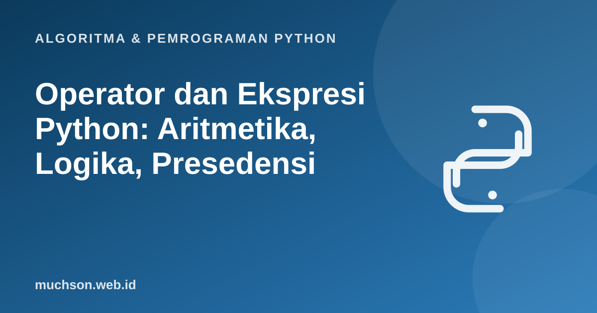

Beranda › Artikel › Algoritma & Pemrograman Python
Algoritma & Pemrograman PythonOperator dan Ekspresi Python: Aritmetika, Logika, Presedensi
Ekspresi adalah gabungan nilai dan operator yang menghasilkan sebuah nilai baru. Hampir setiap baris program berisi ekspresi, sehingga kesalahan kecil dalam memahami operator bisa menghasilkan bug yang sulit dilacak. Materi ini membahas semua operator penting, urutan pengerjaannya, dan perilaku yang sering mengejutkan pemula.
Sebaiknya sudah paham: variabel dan tipe data Python

Setelah membaca dan mencoba materi ini, Anda mampu:
- memakai operator aritmetika, perbandingan, logika, identitas, dan keanggotaan
- menentukan urutan pengerjaan ekspresi berdasarkan presedensi dan asosiatifitas
- menjelaskan hasil // dan % pada bilangan negatif
- menjelaskan evaluasi hubungan pendek (short-circuit) pada and dan or
- menulis ekspresi kondisi yang benar dan mudah dibaca
Operator aritmetika
| Operator | Arti | Contoh | Hasil |
|---|---|---|---|
| + | Penjumlahan | 7 + 2 | 9 |
| - | Pengurangan | 7 - 2 | 5 |
| * | Perkalian | 7 * 2 | 14 |
| / | Pembagian (selalu float) | 7 / 2 | 3.5 |
| // | Pembagian bulat (floor) | 7 // 2 | 3 |
| % | Sisa bagi (modulo) | 7 % 2 | 1 |
| ** | Pangkat | 2 ** 10 | 1024 |
Pembagian bulat dan sisa pada bilangan negatif
Di Python, // membulatkan ke arah bawah (menuju minus tak hingga), bukan memotong ke arah nol seperti pada beberapa bahasa lain. Sisa bagi % mengikuti tanda pembagi, sehingga selalu berlaku a == (a // b) * b + a % b.
print(7 // 2, 7 % 2) # 3 1
print(-7 // 2, -7 % 2) # -4 1 (floor, bukan -3)
print(7 // -2, 7 % -2) # -4 -1
a, b = -7, 2
print((a // b) * b + a % b == a) # selalu True3 1
-4 1
-4 -1
True
Operator perbandingan dan perbandingan berantai
Hasil perbandingan adalah bool. Python mengizinkan perbandingan berantai yang menyerupai notasi matematika.
x = 7
print(x > 3, x == 7, x != 7, x <= 6)
print(1 < x < 10) # berantai: (1 < x) and (x < 10)
print(1 < x > 10) # False, karena x > 10 salahTrue True False False
True
False
Operator logika dan evaluasi hubungan pendek
and, or, dan not bekerja pada nilai kebenaran. Python mengevaluasi dari kiri dan berhenti segera begitu hasilnya pasti: A and B tidak mengevaluasi B bila A salah, dan A or B tidak mengevaluasi B bila A benar. Ini disebut short-circuit.
def cek(nama, nilai):
print(" memeriksa", nama)
return nilai
print("A and B:", cek("A", False) and cek("B", True))
print("C or D :", cek("C", True) or cek("D", False)) memeriksa A
A and B: False
memeriksa C
C or D : True
if x != 0 and 10 / x > 2.Operator and dan or mengembalikan salah satu operandnya, bukan selalu True atau False: 0 or "default" menghasilkan "default", dan "a" and "b" menghasilkan "b". Berguna untuk nilai bawaan, tetapi hati-hati dengan nilai 0, "" atau [] yang dianggap salah.
Operator identitas dan keanggotaan
daftar = [1, 2, 3]
print(2 in daftar, 9 not in daftar)
a = [1, 2]; b = [1, 2]; c = a
print(a == b, a is b, a is c) # sama isi, objek berbeda, objek sama
x = None
print(x is None) # cara yang benar memeriksa NoneTrue True
True False True
True
Urutan pengerjaan (presedensi)
Seperti perkalian yang didahulukan atas penjumlahan, Python punya urutan baku. Dari yang paling kuat ke paling lemah:
| Tingkat | Operator | Catatan |
|---|---|---|
| 1 (tertinggi) | ( ) | Tanda kurung selalu menang |
| 2 | ** | Asosiatif ke kanan: 2 ** 3 ** 2 = 2 ** 9 |
| 3 | +x -x ~x | Unary: -3 ** 2 sama dengan -(3 ** 2) |
| 4 | * / // % | Dari kiri ke kanan |
| 5 | + - | Dari kiri ke kanan |
| 6 | << >> | Geser bit |
| 7 | & ^ | | Bitwise AND, XOR, OR |
| 8 | == != < > <= >= is in | Perbandingan (bisa berantai) |
| 9 | not | Negasi logika |
| 10 | and | |
| 11 (terendah) | or | and lebih kuat dari or |
print(2 + 3 * 4) # 14
print((2 + 3) * 4) # 20
print(2 ** 3 ** 2) # 512, bukan 64
print(-3 ** 2) # -9, bukan 9
print(True or False and False) # True: and dikerjakan dulu14
20
512
-9
True
Bila ragu, pakai tanda kurung. Kode yang eksplisit lebih mudah dibaca daripada kode yang mengandalkan hafalan tabel presedensi.
Operator penugasan gabungan
n = 10
n += 5 # n = n + 5
n *= 2 # n = n * 2
n //= 4 # n = n // 4
n **= 2
print(n) # 4949
1. Berapa hasil 7 + 3 * 2 ** 2 // 5 % 4? Kerjakan sesuai presedensi.
2. Tulis ekspresi yang bernilai True bila tahun y adalah tahun kabisat.
(y % 4 == 0 and y % 100 != 0) or y % 400 == 0. Kabisat: habis dibagi 4 tetapi bukan 100, kecuali habis dibagi 400.3. Mengapa if x == 1 or 2: selalu dianggap benar? Bagaimana menulisnya dengan benar?
(x == 1) or 2, dan 2 selalu benar (truthy). Yang benar: x == 1 or x == 2, atau x in (1, 2).4. Hitung manual -17 // 5 dan -17 % 5.
- / selalu menghasilkan float, // membulatkan ke bawah, dan % mengikuti tanda pembagi.
- Perbandingan bisa berantai (1 < x < 10).
- and dan or berhenti lebih awal (short-circuit) dan mengembalikan operand.
- Presedensi: ** , unary, * / // %, + -, perbandingan, not, and, or. Pakai kurung bila ragu.
Tanya jawab
Mengapa 7 / 2 menghasilkan 3.5 dan bukan 3?
Apa bedanya & dan and?
& adalah operator bitwise yang bekerja pada bit bilangan bulat. and adalah operator logika yang bekerja pada nilai kebenaran dengan short-circuit.Kapan memakai walrus operator (:=)?
Referensi
- Dokumentasi Python: Expressions (urutan presedensi operator)
- Dokumentasi Python: Built-in Types (operasi numerik dan boolean)
- Dokumentasi resmi Python: Python Tutorial
- Allen B. Downey, Think Python (edisi ke-3), buku teks terbuka